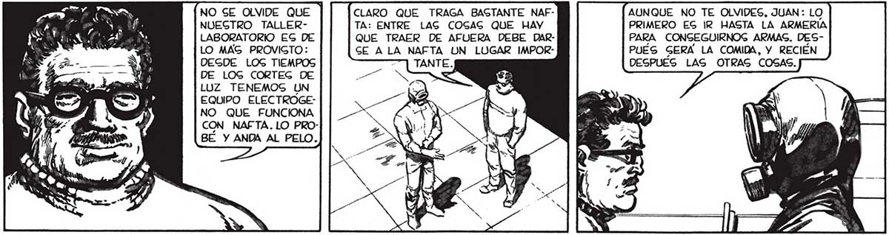
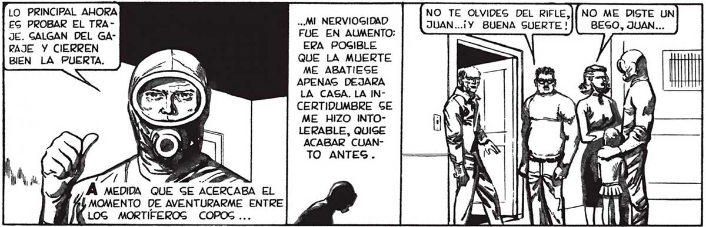
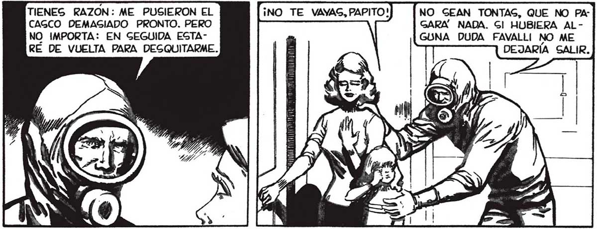

LO PRINCIPAL AHORA ES PROBAR EL TRAJE. GALGAN DEL GÁRAJE Y CIERREN BIEN LA PUERTA. PE 1 Á MEDIDA QUE SE ACERCABA EL MOMENTO DE AVENTURARME ENTRE Sul Am! LOG MORTIFEROS COPOS ... TIENES RAZON: ME PUSIERON EL CAGCO DEMASIADO PRONTO. PERO RÉ DE VUELTA PARA DESQUITARME. NO SE OLVIDE QUE CLARO QUE TRAGA BASTANTE NAFNUEGTRO TALLER- TA: ENTRE LAG COGAGS QUE HAY LABORATORIO ES DE QUE TRAER DE AFUERA DEBE DARLO MAS PROVIGTO: CE ALA NAFTA UN LUGAR IMPORDESDE LOG TIEMPOS ; DE LOG CORTEG DE LUZ TENEMOS UN EQUIPO ELECTROGENO QUE FUNCIONA CON NAFTA. LO PROBE Y ANDA AL PELO. NO TE OLVIDES DEL RIFLE,|| NO ME DISTE UN .¡Y BUENA SUERTE ! BESO, JUAN... ..MI NERVIOGIDAD JUAN. FUE EN AUMENTO: ( ERA POGIBLE QUE LA MUERTE ME ABATIESE APENAS DEJARA LA CASA. LA INCERTIDUMBRE GE ME HIZO INTOLERABLE, QUIGE ACABAR CUANTO ANTES. a! A Ñ NO GEAN TONTAS, QUE NO PA: GARA NADA. Gl HUBIERA AL- | E ce ERA EL ARGUNO IMPORTA: EN GEGUIDA ESTA- GUNA DUDA FAVALLI NO ME MENTO PRINCIPAL IB DEJARÍA SALIR.] CON QUE YO MIGMO AUNQUE NO TE OLVIDES, JUAN: LO Sonaga A TRUCUPRIMERO ES IR HASTA LA ARMERÍA LENTO, PERO FAVAPARA CONGEGUIRNOG ARMAG. DES- LL! TENÍA RAZON. PUÉS GERA LA COMIDA, Y RECIÉN AL NO HABER DESPUÉS LAS OTRAG COSAS. AUTORIDADES Ni POLICIA, MUY PRONTO GE IMPLANTARÍA =| ENTRE LOG POQUÍGIMOG SOBREVIVIEN: TES LA LEY DE LA JUNGLA. GOBREVIVIR GERÍA CUESTION DE MATAR O MORIR.. OLO YA, ME ACERQUÉ A LA PUERTA Y TOMÉ EL RIFLE... LE HARÉ CAGO A FAVALLI: QUIÉN SABE CON LO QUE ME ENCUENTRO AFUE: RA. AUNQUE OJALA'” PUEDA UGARLO : SIGNIFICARÁ QUE LOG [> COPOG NO ME [FW TY RO NADA. SER e A y) valid 1: MN HABIA EGTADO TRATANDO DE DARME ANIMO. PERO NO ERA NADA CONVINCENTE: ¿ACAGO FAVALLI SABÍA MAS QUE YO DE AQUELLA NEVADA DE PEGADILLA 2 Sl NI SIQUIERA LOG SABIOG, LO HABÍA DICHO LA RADIO, GABIAN NADA... 41


